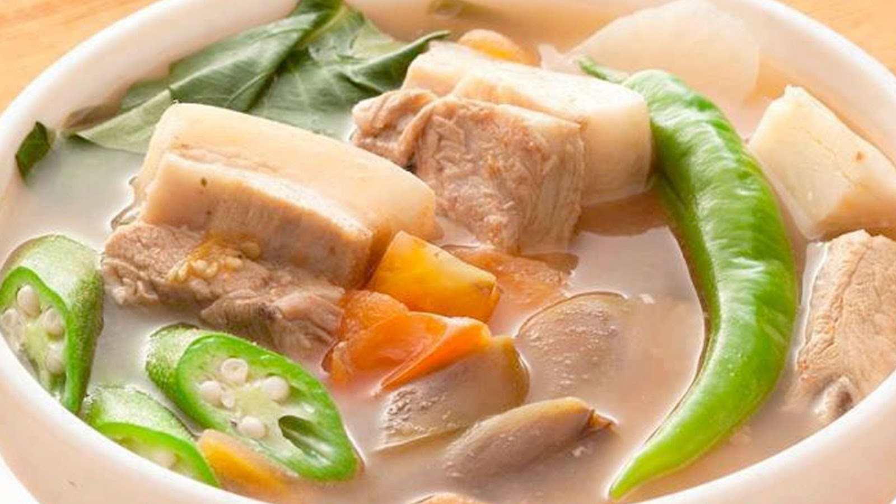

Pork Sampalok Sinigang

Description
Get a taste of Filipino hospitality through this traditional dish made with pork and a delicious tamarind broth.
Ingredients
-
BROTH
- 400-500g sampalok
- 8 cups water
- 2 tbsp neutral oil
- 4 tomatoes, quartered
- 1 red onion, thinly sliced
- 4 cloves garlic, thinly sliced
- salt, to taste
MEAT
- 400g pork ribs
- 400g pork belly, cut into 1-inch pieces
VEGETABLES
- 4 green chilies, whole
- 2 cups radish, sliced into 1/4-inch slices
- 1 larage eggplant, cut into 1-inch pieces
- 1 1/2 cups sitaw, cut into 1 1/2-inch pieces
- 3 cups kangkong, stems and leaves separated
- salt, to taste